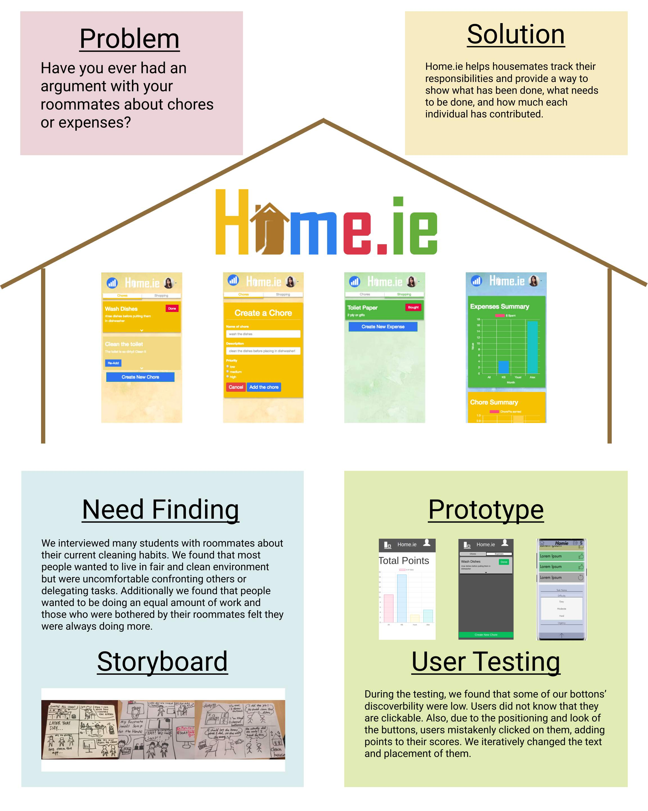

Home.ie
This is a web app that helps housemates track their responsibilities with statistics that provides a way to show what has been done, what needs to be done, and how much each individual has contributed. (Group project)
My Major Role: Front-end Design & Programming
Click here to open the Web App (*Please open it in a mobile view.)
Working Process
~Problem Statment~
Living in a home environment can be difficult if proper effort and maintenance is not put into place. Sometimes living with friends or peers can make communication and confrontation difficult, fearful of hurting feelings and causing animosity.
1. Prototyping
a) Observation
We made some observations and interviewed students with roommates about their current cleaning habits. We found that most people wanted to live in fair and clean environment but were uncomfortable confronting others or delegating tasks. Additionally we found that people wanted to be doing an equal amount of work and those who were bothered by their roommates felt they were always doing more.
b) Storyboard
Base on the problems given, we made three Storyboards to address different user needs.
c) Paper Prototype
Based on the storyboard, we made two paper prototypes. In the prototypes, we included the important UI elements, but not the details about color, fonts and alignment.
#1
#2
c) Video Prototype
We created on a 1-minute video prototype that demonstrates a scenario where our app might be used and the potential users that might use it.
The video is very fun! Click here to watch it
d) Heuristic Evaluation
Through the evaluation, people were willing to criticize our paper prototype, and we got some very useful insights on the flows. For example, we tried to include all the chore cards and graphs on the homepage to reduce the clicks that users need to make. However, it turned out that there were too much information, which is confusing users about what they should look at or do.
Here is the list of changes we decided to make based on the feedback form the evaluators:
- More efficient sign-in methods (include facebook, etc)
- Present less information on the home page (only tasks without graphs, or only one task per page)
- Add functions of showing pictures for both bought item receipt and house conditions.
- Add confirmation after users pressing “done”
- Think more carefully about the notification system
- Add some more description to tell user what they can do in this app
- Need to add a system to evaluate the quantity and the quality of the task (time, dirtiness, etc)
~Programming~
After the prototype, we made a development plan and started coding the app using node.js. We used JSON data to customize the pages, and we also embedded Facebook Login, real time graph, forms for creating new chore and shopping, retrieving old tasks and etc. To see the full app, click here. **Please use the app in a mobile view.
~User Testing~
We tested with UCSD students who are living in a shared home environment. These people are our main user base since many college and grad students have to deal with living with roommates in their own houses often for the first times in their lives. We envision these people using our app the most to set rules and organize themselves in a truly fair way.
User #1
Actions: User double clicked on the done button, so he accidentally clicked on the revive button, which brought the task back. He needed to click on the done button again to disable to chore, but ended up adding two points instead of one.
User #2
Actions: After user open the app, it took her 5 seconds to initiate an action because she could not tell what is the app about and what she can do on the screen. She also could not identify what are the clickables on the screen. She had a hard time identifying the expand button that will show the graphs under each chore cards.
General Findings:
- There was some difficulty finding the stats page in both testing sessions. This could most likely explained by the lack of button like look of the current statistics button. Both subjects had trouble with the discoverability of that portion of the page.
- We seem to be lacking a type of immediate response or results from completing tasks within the app. Or it may seem not obvious at first that clicking done on the task or expense will lead to some type of tabulation or collection of data. Both subjects took some time to find the stats page and even abused some of the functions of the app by repeatedly ‘reviving’ a task and repeatedly clicking ‘done’.
- Our app is heavily reliant on internet speed and connection. This could be problematic if the connection strength is less than ideal. As evident in our testing inside Geisel Library during peak hours. We had trouble logging in through a remote device and had to resort to using one of our devices.
~Final Poster~
Challenges/Takeaways
~Interviews~
The interviews provided us some insights about user needs. However, it was hard to detect what the real problems were.
For example, it was hard to tell what people were really stressed about their roommates. Did they had different definition of “clean”, which resulting unequal work distribution? Is the work distribution related to individual’s schedule? Or, are some people really doing more than others as they feel? Currently, our app is trying to provide subjective data to reveal the actual work distribution. However, these are the questions we definitely need to further explore to really solve the problem rather than just providing subjective reference.
~User Testing~
When we did user testing for the first version of our app, I had some very important lesson. Since we had very little time to finish this app, we really focused on making everything functional, but we did not pay much attention on the details of the layout of the components on the screen. However, it was those missed details led users to misusing or not noticing the functions we implemented. Therefore, after this user testing, we decided to split the work of front-end coding and back-end coding to make sure we are making progress parallely.